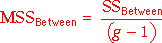
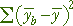
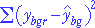

If you don't want to print now,
Data
In this section, we examine data that may arise as:
We will model the data in terms of g groups. The data often arise from completely randomised experiments with g treatments.
Model
The model that was used for 2 groups can be easily extended to to g > 2 groups, allowing different means and standard deviations in all groups.
| Group i: | Y ~ normal (µi , σi) |
However to develop a test for equal group means with g > 2 groups, we must make an extra assumption that the standard deviations in all groups are the same.
| Group i: | Y ~ normal (µi , σ) |

If there are g groups, this model has g + 1 unknown parameters — the g group means and the common standard deviation, σ. It is flexible enough to be useful for many data sets.
If the assumptions of a normal distribution and constant variance do not hold, a nonlinear transformation of the response may result in data for which the model is appropriate.
Estimating the group means
We now assume a normal model with the same standard deviation in each group,
| Group i: | Y ~ normal (µi , σ) |
The sample means provide estimates of the {µi}:

Estimating σ2
The sample standard deviation in any single group, si, is a valid estimate of σ, but we need to combine these g separate estimates in some way.
It is easier to describe estimation of σ2 rather than σ. If the sample sizes are the same in all groups, a pooled estimate of σ2 is the average of the group variances,

If the sample sizes are not equal in all groups, this is generalised by adding the numerators and denominators of the formulae for the g separate group variances,

More mathematically, yij denotes the j 'th of the ni values in group i , for i = 1 to g . The pooled estimate of σ2 can then be written as

The pooled variance is influenced most by the sample variances in the groups with biggest sample sizes.
Revisiting the difference between two group means
In an earlier section, we described confidence intervals and tests about the difference between two group means, µ2 - µ1. They can be improved if we can assume that
σ1 = σ2 = σ
Inference is still based on  ,
but the equation for its standard deviation can be simplified
,
but the equation for its standard deviation can be simplified

Confidence interval
A 95% confidence interval for µ2 - µ1 has the same general form as before,

but the standard deviation and the degrees of freedom for the t-value, ν, are different.
| degrees of freedom | ||
| Allowing σ1 ≠ σ2 | min( n1 - 1, n2 - 1) | |
| Assuming σ1 = σ2 = σ | n1 + n2 - 2 |
If it can be assumed that σ1 = σ2, the confidence interval is usually narrower.
Example
The diagram below shows 95% confidence intervals obtained by the two methods.

Note that the CI obtained with the assumption of equal variances is slightly narrower.
Recommendation
It is usually best to avoid assuming equal standard deviations when comparing two groups.
Hypothesis tests
Similarly, if we can assume that σ1 = σ2, the test for equal group means can be improved.
H0 : μ2 − μ1 = 0
HA : μ2 − μ1 ≠ 0
We can use the test statistic

The p-value for this test is found from the tail area of the t distribution with (n1 + n2 - 2) degrees of freedom.
Comparing several groups
A new approach is needed to compare the means of three or more groups — the methods for two groups cannot be extended. We again assume a normal model with equal standard deviations,
| Group i: | Y ~ normal (µi , σ) |
Testing whether there are differences between the groups involves the hypotheses,
H0 : µi = µj for
all i and j
HA: µi ≠ µj for
at least some i, j
Variation between and within groups
Testing whether the model means, {µi}, are equal is done by assessing the variation between the group means in the data. However, because of randomness in sample data, the means are unlikely be the same, even if H0 is true.
In the example on the left below, the group means vary so much that the {µi} are almost certainly not equal. However the group means on the right are relatively similar and their differences may simply be randomness.

To assess whether the means are 'unusually different', we must also take account of the variation within the groups. The data set on the left below gives much stronger evidence of group differences than that on the right, even though the group means are the same in both data sets.

The evidence against H0 depends on the relative size of the variation within groups and between groups.
Notation
In the formulae in this page, the values in the i'th group are denoted
by yi 1, yi 2,
... . More generally, the j'th
value in the i'th group is called yij and
the
mean of the values in the i'th group is  .
.
Total variation
| The total sum of squares reflects the total variability of the response. |
The overall variance of all values (ignoring groups) is the total sum of squares divided by (n - 1).

Variation between groups (signal)
| The sum of squares between groups measures the variability of the group means. |
Variation between groups is summarised by the differences between the group means and the overall mean. Note that the summation is over all observations in the data set.

Variation within groups (noise)
| The sum of squares within groups quantifies the spread of values within each group. |
This is also called the residual sum of squares since it describes variability that is unexplained by differences between the groups. Note that the pooled estimate of the common variance, σ2, is the sum of squares within groups divided by (n - g).

Relationship between sums of squares
The following relationship requires some algebra to prove but is important.

Sums of squares
| Sum of squares | Interpretation |
|---|---|
| Overall variability of Y, taking no account of the groups. | |
| Variability that cannot be explained by the model. | |
| Variability that is explained by the model. |
Coefficient of determination
The proportion of the total sum of squares that is explained by the model is called the coefficient of determination,

Example

Hypothesis test
The following hypotheses are used to test whether the group means are all equal:
H0 : µi = µj for
all i and j
HA: µi ≠ µj for
at least some i, j
We will describe some of the steps for this test, but cannot justify them here.
Mean sums of squares
The three sums of squares are first divided by values called their degrees of freedom:
| The mean total sum of squares is the sample variance of the response (ignoring groups). | |
| The mean within-group sum of squares is the pooled estimate of the variance within groups. | |
|  | The mean between-group sum of squares is harder to directly interpret. |
The numerators in these ratios add up:
SSTotal = SSBetween + SSWithin
and the same relationship holds for their denominators (degrees of freedom):
dfTotal = dfBetween + dfWithin
F ratio and p-value
The test statistic is an F-ratio,

This test statistic compares between- and within-group variation. The further
apart the group means, the larger SSBetween and the larger the F-ratio.
Large values of F suggest that H0 does not hold — that the group means are not the same.
The p-value for the test is the probability of such a high F ratio if H0 is true (all group means are the same). It is based on a standard distribution called an F distribution and is interpreted in the same way as other p-values.
The closer the p-value to zero, the stronger the evidence that H0 does not hold.
Analysis of variance table
An analysis of variance table (anova table) describes some of the calculations above:


In paired data, two related measurements, X and Y, are made from each sampled individual and we are interested in testing whether their means are equal.
Groups of 3 or more values
The idea of paired data can be extended to situations in which 3 or more related measurements are made from each 'individual'. Two important situations that give rise to this type of data are:
Example (randomised blocks)
In an experiment to assess the effect of codeine and acupuncture for relieving dental pain, 32 subjects were grouped into blocks of 4 according to an initial assessment of their tolerance to pain. Four treatments were randomly given to the four subjects in each block and pain relief scores were recorded.
| Pain relief score | |||||||||
|---|---|---|---|---|---|---|---|---|---|
| Tolerance group |
Control | Codeine only |
Acupuncture only |
Codeine + Acupuncture |
|||||
|
|
|
|
|
|||||
Example (repeated measures)
An experiment investigated the use of nicotine to control tics in patients with Tourette's syndrome. For each patient, the number of tics was recorded before a nicotine gum was chewed and at different times afterwards.
| Number of tics during 30-min period | |||||||||
|---|---|---|---|---|---|---|---|---|---|
| Patient | Baseline | Chewing gum | 0-30 min after | 30-60 min after | |||||
|
|
|
|
|
|||||
We start with a simple example in which one of the g treatments is a standard or 'baseline' treatment. The other (g − 1) treatments can be compared to it using standard confidence intervals for paired data. These confidence intervals are usually narrower than the corresponding confidence intervals that would be found for independent samples.
Example
In a randomised experiment about pain relief treatments in dental patients, 32 subjects were grouped into blocks of four according to an initial assessment of their tolerance to pain. One treatment was a placebo (dummy treatment) that the others could be compared to.

If the initial grouping of paitents into blocks is ignored, 95% confidence intervals for the improvement in pain relief over the placebo are wide. Taking account of the initial grouping, differences are far more accurately estimated.

Testing for equal treatment means
If there is no baseline treatment, analysis should start with a single hypothesis test for whether all treatment means are equal. The standard multi-group analysis of variance test for equal means in a completely randomised experiment (ignoring the blocks) should not be used for experiments with blocks.
Ignoring the existence of blocks makes it much harder to detect differences between treatments.
Example
Five different observers each watched the same group of 10 cattle and reported how long each animal spent grazing.
Wrong analysis
Ignoring the fact that the same animals were observed by all five observers, the data would be analysed with the anova table below. From the large p-value, we would conclude that there were no differences between the observers.

Correct analysis
Much of the variability in the data is due to differences between the animals (blocks), and an analysis that ignores this is much less sensitive to differences between the observers. We will not explain the correct test for blocked data until later in this section, but it gives a p-value that is interpreted in the same way as the p-value above. It is shown below and shows that there are almost certainly differences between the observers.

In paired data, each of the two treatments is used once within each block (pair). The previous pages generalised this to more than two treatments, but each treatment was still used once in each block. We now generalise further to allow the block size to be any multiple of the number of treatments.
Reducing unexplained variability
To assess the significance of differences between experimental treatments, variation in the treatment means is compared to the amount of unexplained (random) variation. With less unexplained variation, there is less chance of the differences between treatment means having arisen by chance. There are two ways to reduce unexplained variation:
The simplest way to use blocks in an experiment is with a randomised block design. In this, the block size is a multiple of the number of treatments. Each treatment is used for the same number of experimental units within each block, and the treatments are randomly allocated to units within the blocks.
Example
An experiment was conducted in which the experimental units were intestinal preparations from fish, but each fish would only give six preparations. The six preparations from each fish constitute a block of units. Two treatments were used, with the six preparations from each of four fish randomly split into three preparations for each treatment (a randomised block experiment).
Wrong analysis
Ignoring possible differences between the four fish and treating the data as a completely randomised experiment with 24 experimental units, we would conclude that there is moderately strong evidence of a difference between the two treatments.

Correct analysis
There are considerable differences between the four fish (blocks), with much lower variability within any single fish. The correct analysis is explained later in this section and the resulting p-value gives much stronger evidence of a difference between the two treatments.

Three-dimensional scatterplot of data
Data from a randomised block experiment can be displayed in a three-dimensional scatterplot:

Model
Both blocks and treatments explain some variability in the response measurement, Y, but...
Blocks and treatments are modelled in the same way:
y = (overall
mean) + (effect depending on block)
+ (effect depending on treatment)
+ error
The error is again assumed to have a normal distribution with mean zero and constant standard deviation. Within any block, changing the treatment simply adds or subtracts a constant to the response.
Making all block means equal
Our model for randomised block data explains the effect of the blocks on Y as a addition of a "block effect" to all values within each block. This suggests eliminating differences between the blocks by adjusting the values in all blocks to have the same block means.
Example
The diagram below shows results from an experiment with blocks of size five and five treatments. Different colours are used for the different blocks and the block means are shown with vertical lines.
A lot of the variability in the response, Y, is caused by differences between the blocks. The diagram below adjusts the values by adding a constant to all values in each block, givving all blocks the same mean response.

Since there is now much less 'unexplained' variation and there are now no differences between blocks, applying the standard anova test for equal treatment means to the adjusted data seems reasonable and is much more sensitive to treatment differences:

The treatment and residual sums of squares shown here are the basis for testing whether the treatment means are equal, but the analysis is not completely correct.
| The residual degrees of freedom are too high. |
The correct analysis of variance table for testing equal treatment means is a little more complex for randomised block data; it will be explained in the following pages.
Notation
For randomised block data, we use the following notation:
| ybgr | the rth of the observations in block b that get treatment g |
| mean response in block b | |
| mean response for all observations getting treatment g | |
| overall mean response for all observations |
In many examples, there is only a single observation for each combination of block and treatment, but our notation allows for two or more.
Sums of squares
For randomised block data, we again split the total sum of squares into components, but now need to use three components.

The block and treatment sums of squares describe variation that is explained by the randomised block model whereas the residual sum of squares is unexplained.
| The total sum of squares reflects the total variability of the response. | |
|  | The sum of squares between blocks measures the variability of the block means. |
| The sum of squares between treatments measures the variability of the treatment means. | |
|  | The residual sum of squares describes the variation that is unexplained by blocks or treatments. |
Note that all summations are over all observations in the data set.
Residuals and residual variation
As in regression, we define residuals to be the difference between the recorded response values and the closest we can get from our model. For a randomised block model, the best estimate is:
 = b0 + b1 xi
= b0 + b1 xi
This can be interpreted as:
Anova table
The three components that add to total sum of squares are usually laid out in an analysis of variance table (or simply anova table).

The anova table adds a few extra columns:
Tests
The F-ratio for differences between the treatments compares the variability explained by the treatments to the residual (unexplained) variation. The larger the F-ratio, the stronger the evidence for a difference between treatments. A formal hypothesis test is based on the F-ratio and its p-value is the probability of getting as big an F-ratio as that recorded if all treatment means were equal. It is interpreted in the same way as all other p-values.
A p-value can also be found to test whether there are differences between the blocks, but this is usually of less interest.
In practice, computer software will produce the anova table for you, so you only need to interpret the p-value associated with the treatments.
Examples